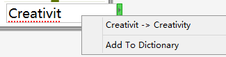
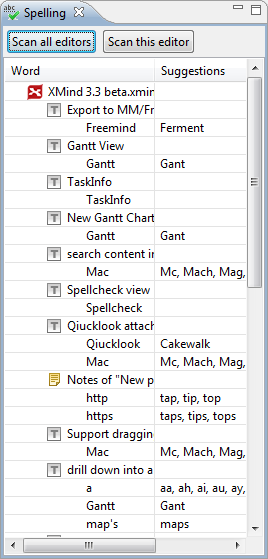

Spell Check
A spell checker is automatically invoked as users type text into XMind topics. The misspelled words are marked with a red underline. Right-click on the word, you can replace it with the suggested words, or add this word to your dictionary.

XMind also offers a spell check view. Please select "View -- Spelling" from menu to open it.
*the Spell Checker View 
Spelling view has two buttons,
- Scan all editors: check the spelling in all opened xmind workbooks.
- Scan this editor: check the spelling in current xmind workbook.
All scanned results will be listed in this view with suggestions. Double-clicking that wrong-spelled word can bring you to it in the map editor. Then you can direclty modify or ignore that word easily.
BTW, you can change spell check settings via following steps:
- Choose 'Edit > Preferences' on the menu.
- Select Mind map -- Spelling.
- You can see following check boxes:
- Enable spell checking
- Ignore words like "XMIND"
- Ignore words like "XMind"
- Ignore words like "http://www.XMind.net/"
- Ignore words like "xmind3"
- Ignore sentences that starts with an lower case letter
- Adding your own dictionary file(*.dict) into XMind.
p align="right">Help Center